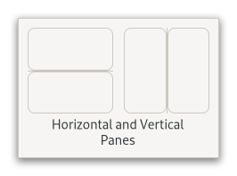

Gtk.Paned¶
Example¶
- Subclasses
None
Methods¶
- Inherited
Gtk.Widget (179), GObject.Object (37), Gtk.Accessible (7), Gtk.Buildable (1), Gtk.Orientable (2)
- Structs
class |
|
|
|
|
|
|
|
|
|
|
|
|
|
|
|
|
|
|
Virtual Methods¶
- Inherited
Properties¶
- Inherited
Name |
Type |
Flags |
Short Description |
|---|---|---|---|
r/w/en |
|||
r/en |
|||
r/en |
|||
r/w/en |
|||
r/w/en |
|||
r/w/en |
|||
r/w/en |
|||
r/w/en |
|||
r/w/en |
|||
r/w/en |
|||
r/w/en |
Signals¶
- Inherited
Name |
Short Description |
|---|---|
Emitted to accept the current position of the handle when moving it using key bindings. |
|
Emitted to cancel moving the position of the handle using key bindings. |
|
Emitted to cycle the focus between the children of the paned. |
|
Emitted to cycle whether the paned should grab focus to allow the user to change position of the handle by using key bindings. |
|
Emitted to move the handle with key bindings. |
|
Emitted to accept the current position of the handle and then move focus to the next widget in the focus chain. |
Fields¶
- Inherited
Class Details¶
- class Gtk.Paned(**kwargs)¶
- Bases
- Abstract
No
A widget with two panes, arranged either horizontally or vertically.
An example
Gtk.PanedThe division between the two panes is adjustable by the user by dragging a handle.
Child widgets are added to the panes of the widget with [method`Gtk`.Paned.set_start_child] and [method`Gtk`.Paned.set_end_child]. The division between the two children is set by default from the size requests of the children, but it can be adjusted by the user.
A paned widget draws a separator between the two child widgets and a small handle that the user can drag to adjust the division. It does not draw any relief around the children or around the separator. (The space in which the separator is called the gutter.) Often, it is useful to put each child inside a [class`Gtk`.Frame] so that the gutter appears as a ridge. No separator is drawn if one of the children is missing.
Each child has two options that can be set, “resize” and “shrink”. If “resize” is true then, when the
GtkPanedis resized, that child will expand or shrink along with the paned widget. If “shrink” is true, then that child can be made smaller than its requisition by the user. Setting “shrink” to false allows the application to set a minimum size. If “resize” is false for both children, then this is treated as if “resize” is true for both children.The application can set the position of the slider as if it were set by the user, by calling [method`Gtk`.Paned.set_position].
- CSS nodes
`` paned ├── <child> ├── separator[.wide] ╰── <child> ``
GtkPanedhas a main CSS node with name paned, and a subnode for the separator with name separator. The subnode gets a .wide style class when the paned is supposed to be wide.In horizontal orientation, the nodes are arranged based on the text direction, so in left-to-right mode,
:first-childwill select the leftmost child, while it will select the rightmost child in RTL layouts.- Creating a paned widget with minimum sizes.
```c
Gtk.Widget*hpaned =Gtk.Paned.new(Gtk.Orientation.HORIZONTAL);Gtk.Widget*frame1 =Gtk.Frame.new(None);Gtk.Widget*frame2 =Gtk.Frame.new(None);Gtk.Widget.set_size_request(hpaned, 200, -1);Gtk.Paned.set_start_child(GTK_PANED (hpaned), frame1); gtk_paned_set_start_child_resize (GTK_PANED (hpaned),True); gtk_paned_set_start_child_shrink (GTK_PANED (hpaned),False);Gtk.Widget.set_size_request(frame1, 50, -1);Gtk.Paned.set_end_child(GTK_PANED (hpaned), frame2); gtk_paned_set_end_child_resize (GTK_PANED (hpaned),False); gtk_paned_set_end_child_shrink (GTK_PANED (hpaned),False);Gtk.Widget.set_size_request(frame2, 50, -1); ```- classmethod new(orientation)[source]¶
- Parameters
orientation (
Gtk.Orientation) – the paned’s orientation.- Returns
the newly created paned widget
- Return type
Creates a new
GtkPanedwidget.
- get_end_child()[source]¶
- Returns
the end child widget
- Return type
Gtk.WidgetorNone
Retrieves the end child of the given
GtkPaned.
- get_position()[source]¶
- Returns
the position of the divider, in pixels
- Return type
Obtains the position of the divider between the two panes.
- get_resize_end_child()[source]¶
- Returns
true if the end child is resizable
- Return type
Returns whether the [property`Gtk`.Paned:end-child] can be resized.
- get_resize_start_child()[source]¶
- Returns
true if the start child is resizable
- Return type
Returns whether the [property`Gtk`.Paned:start-child] can be resized.
- get_shrink_end_child()[source]¶
- Returns
true if the end child is shrinkable
- Return type
Returns whether the [property`Gtk`.Paned:end-child] can shrink.
- get_shrink_start_child()[source]¶
- Returns
true if the start child is shrinkable
- Return type
Returns whether the [property`Gtk`.Paned:start-child] can shrink.
- get_start_child()[source]¶
- Returns
the start child widget
- Return type
Gtk.WidgetorNone
Retrieves the start child of the given
GtkPaned.
- set_end_child(child)[source]¶
- Parameters
child (
Gtk.WidgetorNone) – the widget to add
Sets the end child of self to child.
If child is
NULL, the existing child will be removed.
- set_position(position)[source]¶
- Parameters
position (
int) – pixel position of divider, a negative value means that the position is unset
Sets the position of the divider between the two panes.
- set_resize_end_child(resize)[source]¶
- Parameters
resize (
bool) – true to let the end child be resized
Sets whether the [property`Gtk`.Paned:end-child] can be resized.
- set_resize_start_child(resize)[source]¶
- Parameters
resize (
bool) – true to let the start child be resized
Sets whether the [property`Gtk`.Paned:start-child] can be resized.
- set_shrink_end_child(resize)[source]¶
- Parameters
resize (
bool) – true to let the end child be shrunk
Sets whether the [property`Gtk`.Paned:end-child] can shrink.
- set_shrink_start_child(resize)[source]¶
- Parameters
resize (
bool) – true to let the start child be shrunk
Sets whether the [property`Gtk`.Paned:start-child] can shrink.
- set_start_child(child)[source]¶
- Parameters
child (
Gtk.WidgetorNone) – the widget to add
Sets the start child of self to child.
If child is
NULL, the existing child will be removed.
Signal Details¶
- Gtk.Paned.signals.accept_position(paned)¶
- Signal Name
accept-position- Flags
- Parameters
paned (
Gtk.Paned) – The object which received the signal- Return type
Emitted to accept the current position of the handle when moving it using key bindings.
This is a keybinding signal.
The default binding for this signal is <kbd>Return</kbd> or <kbd>Space</kbd>.
- Gtk.Paned.signals.cancel_position(paned)¶
- Signal Name
cancel-position- Flags
- Parameters
paned (
Gtk.Paned) – The object which received the signal- Return type
Emitted to cancel moving the position of the handle using key bindings.
The position of the handle will be reset to the value prior to moving it.
This is a keybinding signal.
The default binding for this signal is <kbd>Escape</kbd>.
- Gtk.Paned.signals.cycle_child_focus(paned, reversed)¶
- Signal Name
cycle-child-focus- Flags
- Parameters
- Return type
Emitted to cycle the focus between the children of the paned.
This is a keybinding signal.
The default binding is <kbd>F6</kbd>.
- Gtk.Paned.signals.cycle_handle_focus(paned, reversed)¶
- Signal Name
cycle-handle-focus- Flags
- Parameters
- Return type
Emitted to cycle whether the paned should grab focus to allow the user to change position of the handle by using key bindings.
This is a keybinding signal.
The default binding for this signal is <kbd>F8</kbd>.
- Gtk.Paned.signals.move_handle(paned, scroll_type)¶
- Signal Name
move-handle- Flags
- Parameters
paned (
Gtk.Paned) – The object which received the signalscroll_type (
Gtk.ScrollType) – aGtkScrollType
- Return type
Emitted to move the handle with key bindings.
This is a keybinding signal.
- Gtk.Paned.signals.toggle_handle_focus(paned)¶
- Signal Name
toggle-handle-focus- Flags
- Parameters
paned (
Gtk.Paned) – The object which received the signal- Return type
Emitted to accept the current position of the handle and then move focus to the next widget in the focus chain.
This is a keybinding signal.
The default binding is <kbd>Tab</kbd>.
Property Details¶
- Gtk.Paned.props.end_child¶
- Name
end-child- Type
- Default Value
- Flags
The second child.
- Gtk.Paned.props.max_position¶
- Name
max-position- Type
- Default Value
2147483647- Flags
The largest possible value for the [property`Gtk`.Paned:position] property.
This property is derived from the size and shrinkability of the widget’s children.
- Gtk.Paned.props.min_position¶
- Name
min-position- Type
- Default Value
0- Flags
The smallest possible value for the [property`Gtk`.Paned:position] property.
This property is derived from the size and shrinkability of the widget’s children.
- Gtk.Paned.props.position¶
- Name
position- Type
- Default Value
0- Flags
Position of the separator in pixels, from the left/top.
- Gtk.Paned.props.position_set¶
- Name
position-set- Type
- Default Value
- Flags
Whether the [property`Gtk`.Paned:position] property has been set.
- Gtk.Paned.props.resize_end_child¶
- Name
resize-end-child- Type
- Default Value
- Flags
Determines whether the second child expands and shrinks along with the paned widget.
- Gtk.Paned.props.resize_start_child¶
- Name
resize-start-child- Type
- Default Value
- Flags
Determines whether the first child expands and shrinks along with the paned widget.
- Gtk.Paned.props.shrink_end_child¶
- Name
shrink-end-child- Type
- Default Value
- Flags
Determines whether the second child can be made smaller than its requisition.
- Gtk.Paned.props.shrink_start_child¶
- Name
shrink-start-child- Type
- Default Value
- Flags
Determines whether the first child can be made smaller than its requisition.
- Gtk.Paned.props.start_child¶
- Name
start-child- Type
- Default Value
- Flags
The first child.
- Gtk.Paned.props.wide_handle¶
- Name
wide-handle- Type
- Default Value
- Flags
Whether the
GtkPanedshould provide a stronger visual separation.For example, this could be set when a paned contains two [class`Gtk`.Notebook]s, whose tab rows would otherwise merge visually.